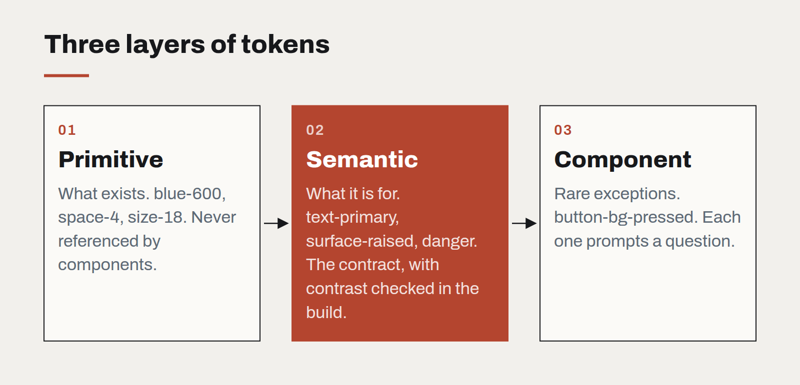

Design tokens are a contract, not a palette
Most token files we inherit are a list of colours with clever names. The useful ones are agreements between design and engineering about what may change, and what must not.
Design tokens arrived with a promise: define your colours, spacing and type once, and every product, platform and team will stay consistent. In practice, the token files we inherit on client projects tend to be one of two things. Either a flat list of every colour anyone ever used, each with a name like blue-500-alt, or an elaborate hierarchy so abstract that nobody can say which token to use for a table border.
Neither is a contract. And a contract is what tokens are for.
Three layers, three kinds of promise
The token systems that survive contact with a real organisation usually have three layers, and each makes a different promise.
- Primitive tokens describe what exists: the brand's twelve blues, the spacing scale, the type sizes. They promise nothing about usage. Engineers should almost never reference them directly.
- Semantic tokens describe intent:
text-primary,surface-raised,border-subtle,danger. These are the promise. A component that usestext-primaryis guaranteed readable onsurface-default, in light and dark themes, now and after the next rebrand. - Component tokens describe exceptions: the one place a button needs a colour that is not in the semantic set. They should be rare, and each one should be a small embarrassment that prompts a question.
The contract lives in the middle layer. Designers may change which primitive a semantic token points to — that is what a rebrand is. Engineers may rely on the semantic name never disappearing and never breaking its guarantee.

Write the guarantees down
A semantic token is only a contract if its guarantee is written somewhere a machine can check. For colour, that means contrast: every text token paired with the surfaces it may sit on, and a minimum ratio for each pair. For spacing, it means the scale is closed — no arbitrary values in components. For type, it means each role has a size, weight and line height that travel together.
We put these rules into the build. A pull request that pairs text-muted with surface-sunken below 4.5:1 fails, the same way a failing unit test would. That single check has prevented more accessibility regressions on our projects than any audit.
Name for intent, not appearance
The fastest way to break a token system is to name tokens after what they look like. grey-light-border is fine until the brand moves to warm neutrals, at which point every usage is a lie. border-subtle survives any palette.
A good test: could you swap the entire primitive palette for a different brand's and have every semantic name still make sense? If yes, the names are doing their job.
Start smaller than you think
The most successful token sets we have shipped started with fewer than forty semantic tokens. That is enough for text, surfaces, borders, a primary action, and four status colours in two themes. Everything else can be added when a real component needs it — and the conversation about whether it is truly needed is exactly the conversation the system exists to force.
Tokens are not a deliverable. They are an agreement, maintained by both sides, that lets a design language change without every screen having to be checked by hand.
Designing interfaces for answers that might be wrong
Traditional software is either right or broken. AI features are usually right, sometimes wrong, and always confident-sounding. The interface has to carry the uncertainty the model won't.
A design system for teams without a design team
Most organisations that need consistency cannot justify a dedicated design-system group. A small, opinionated kit — and the discipline to keep it small — gets them most of the way.
Motion with a job to do
Animation is either explaining something or getting in the way. A short guide to the motion that earns its milliseconds, and the kind that should be cut.